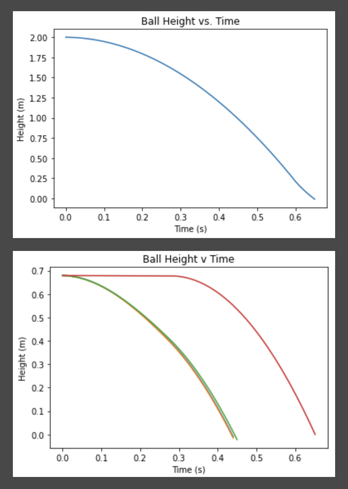

The Effect of Viscosity and Density of Fluids
Description
For this project I worked with a partner to design an experiment. We wanted to see if we could write a program using Euler’s method that would predict the time that a falling projectile would reach the bottom of a container of fluid using drag equations. After writing that program, we found some real times by using an electromagnet to drop a small steel ball into a container with different fluids in it. We performed several tests with water, oil, yogurt, Jello, and hand soap. After performing the tests, we compared the final times to the times that our program had predicted. We found that our program was a pretty good model for drag and viscosity.
Explanation
All projectiles experience drag, whether they are moving through air or through other fluids. And objects moving through viscous fluids are resistant to motion through that fluid due to the viscosity of the fluid. Both forces act in the direction opposite to the projectile’s movement. Since the projectile is falling, these forces act upward and gravity of course pulls the projectile down. These forces, along with the mass of the ball, can be used to calculate the acceleration of the ball. Since acceleration is the change in velocity over time, an approximation of the future velocity can be calculated by multiplying the current acceleration by a small increment of time. A similar process can be used to find the position using the velocity. Since both drag and the resistance to movement due to viscosity are dependent on velocity, those forces will change as the ball falls, changing the acceleration, and therefore the velocity and position as well.
Learn More